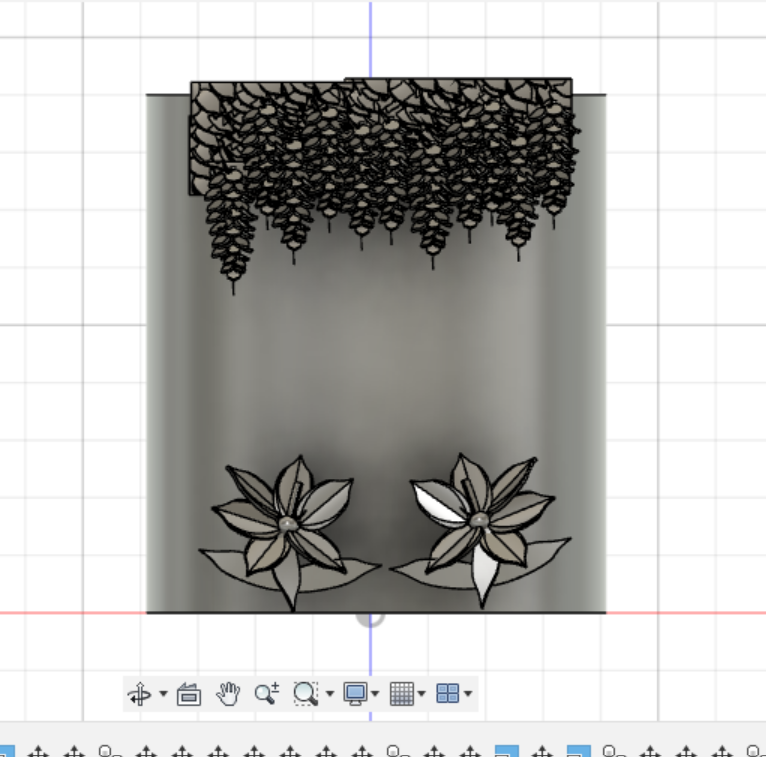
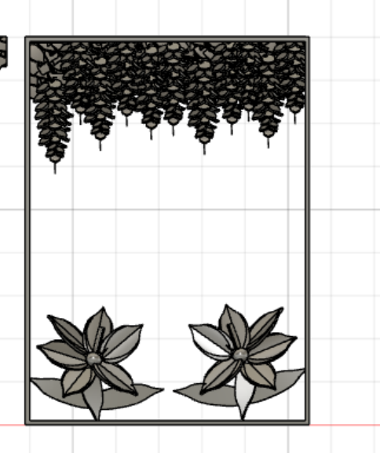
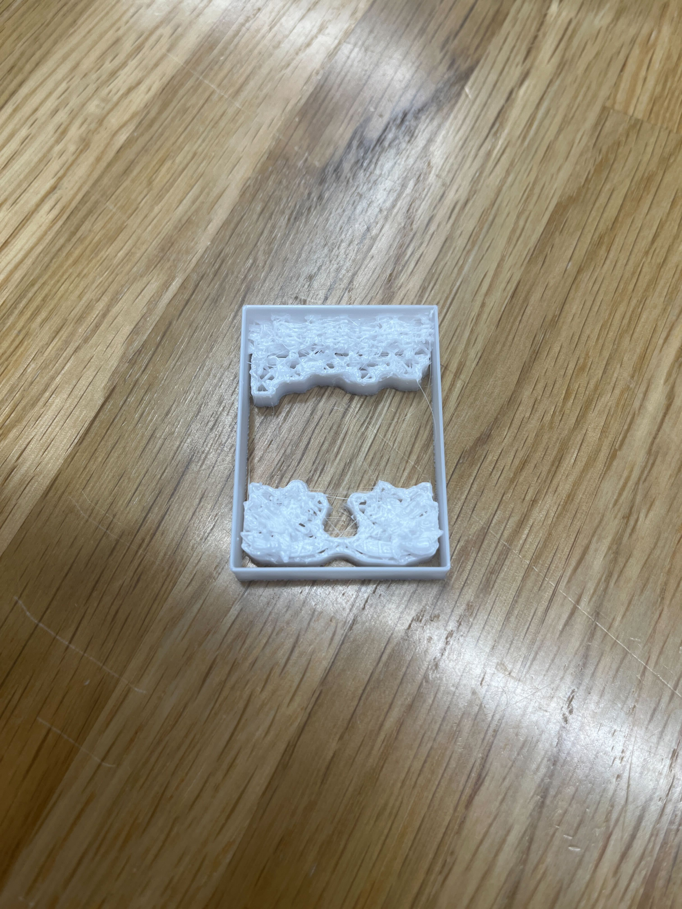

No.5
- 概要
簡単に言うとネッカチーフをまとめるリングを作成したい。
- 背景
私は子どもの頃よりボーイスカウトを行っている。子どもの頃は仲間が沢山いたが、大学生になると皆忙しく活動に参加しなくなってきた。
そんな繋がりを無くしたくない！という想いで何か作りたいと思う。そこで、授業で学んだデジタルファブリケーションのスキルとボーイスカウトの制服にある
ネッカチーフのリングを作成しようと思い立つ。
- 実行メンバー
昔からの付き合いのあるTさん、岩手から来て新しく仲間になったAさん、私
- ボーイスカウトとは
- ネッチリングとは
まずネッチリングとは、首にこのように巻くネッカチーフを首元で絞るように止めるリング状の物である。材質やデザインは様々あり、特に規制はない。そのため個性あふれるものである。
- 計画
・6/25:ミーティング（どのように進めていくか、どんなデザインにするか）
・7月：作成期間
・8月:完成予定
・9月：岩手でのキャンプで仲間にお披露目（岩手の団との交流ができたら！）
- 6/25第一回ミーティングの議事録
・デザインを考えあう(アイデア)
[どんな意味をネッチリングに込めたいか]
●私：【つながり】を表すデザイン
→・一個一個のネッチリングが繋がって「一つの輪となる」
→・一つのネッチにネッチリングをはめるとなんかの模様となる。
●Tさん：【個人らしさ】
→・「メンバーカラー」→色付き素材＆後から着色
→・「その人のアイコンを側面に彫る・書く」→アクスタの柄入れ
●Aさん：【地元らしさ】→「かわせみ」「藤の花」「ご当地キャラ」
・どんなつくり方をするか(アイデア)
☆アクスタはめる → 三面・四面
☆【岩手らしさ】？？←【地元の団らしさ】
☆【地元の団らしさ】→ふくろう
☆【かっこいいデザイン】洗練したデザイン
☆【蓄光素材】←普通におもろい
☆【「そなえよつねに」の記章（アクスタ）】
↑このアクスタの線色を変えれば？？【アイデンティティ】
☆【地元と岩手の花のコラボ】→藤の花（上）とはまゆり（下）
☆つながり：・「きりん」・「回転ずし」 ←（リングを縦に繋げて絵柄が繋がるデザイン）
↓
☆【二つのロープを使う結び目】 ←（ボーイスカウトで使うロープのデザイン）
・第一デザイン案完成！
[全体のデザイン]
・「藤の花×はまゆりの花」←こちらと岩手のコラボ
↑「額」的な
・アクスタにデザインをプリントしてはめる。
・蓄光素材を使う→普通におもろい
[アクスタデザイン案]
・「そなえよつねに」の記章←「メンバーカラー」
・「ロープ二本使う結び目」←三種類くらい（本結び、ひとえつぎ）
fusion360で藤の花とはまゆりをモデリング。細かすぎて重くなる…


とりあえず額だけ出力してみる。上手く出力されるのか…

サイズが小さく、上手く出力されなかった。ぐちゃぐちゃになった。
光造形で出力するのはどうだろうか、もう少し花を大きくするのが良いのか試さねば。